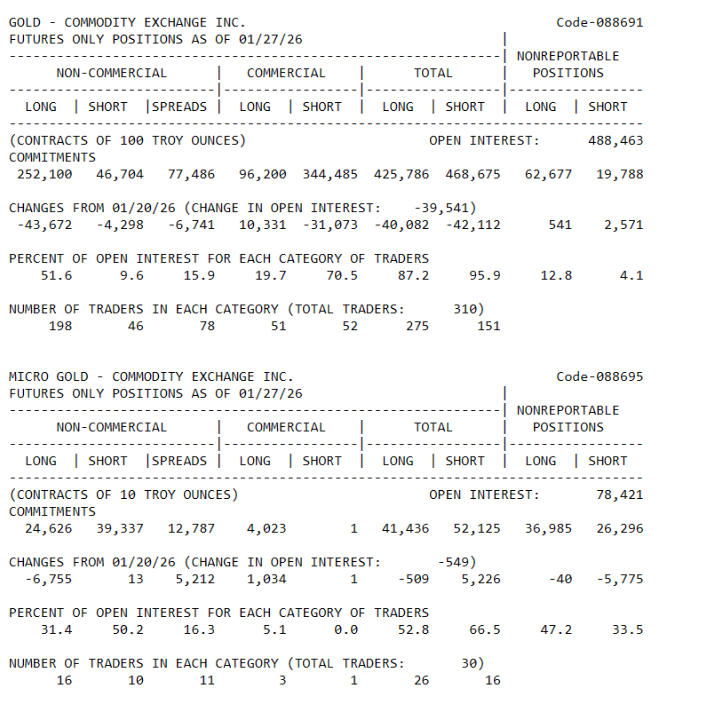
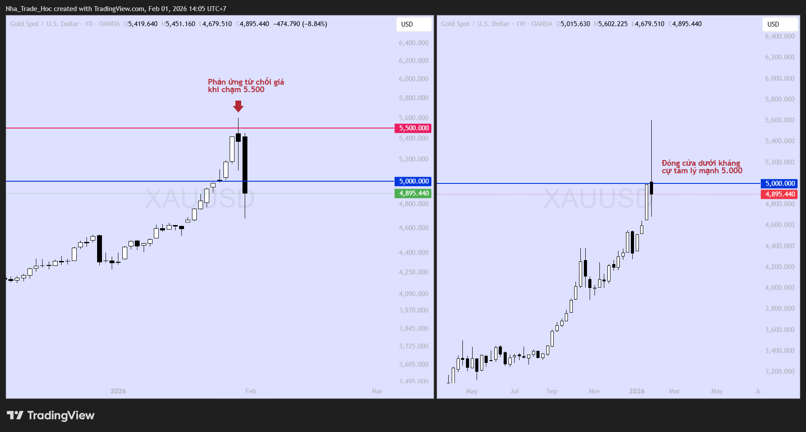
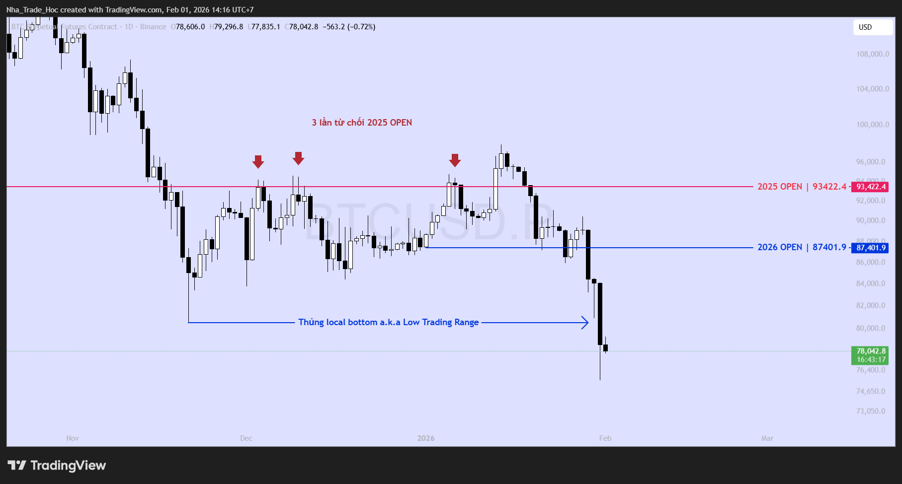
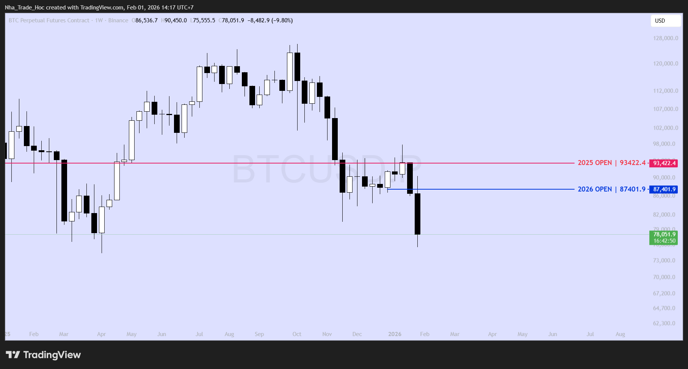
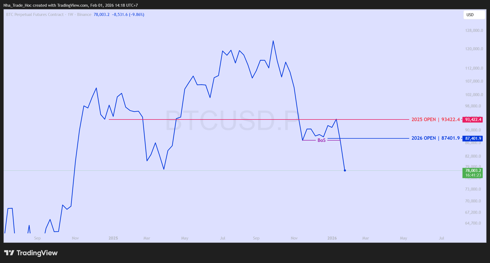

Tháng 1/2026 đã khép lại với sự xác nhận rõ ràng về xu hướng dòng tiền: Risk-off (Ngại rủi ro). Sự sụt giảm của cặp tỷ giá BTC/XAU không chỉ phản ánh sự phân hóa hiệu suất đơn thuần, mà là tín hiệu cảnh báo về việc thanh khoản đang rút khỏi các lớp tài sản đầu cơ.
Trong khi Vàng (XAU) hoàn thành xuất sắc vai trò trú ẩn, thì Bitcoin (BTC) đã đánh mất các mốc hỗ trợ kỹ thuật quan trọng, làm suy yếu nghiêm trọng cấu trúc tăng giá trung hạn. Bước sang tháng 2, chiến lược chủ đạo của chúng tôi là "Bảo vệ thành quả", tập trung giảm thiểu rủi ro biến động (Volatility) trong danh mục.
TỔNG QUAN HIỆU SUẤT THÁNG 1/2026
| Lớp tài sản | Trạng thái | Dữ liệu thị trường |
|---|---|---|
| Vàng (XAU/USD) | TÍCH CỰC | "Đóng cửa quanh mức 4,895.44 USD/oz, tăng + 12.99 % so với đầu tháng. Dòng tiền trú ẩn tiếp tục tìm đến kim loại quý như một bến đỗ an toàn trước biến động địa chính trị." |
| Bitcoin (BTC/USD) | TIÊU CỰC | "Giao dịch tại vùng giá 78606 USD, sụt giảm - 10.17 %. Cấu trúc giá suy yếu đi kèm với áp lực bán tháo (Sell-off) từ các tổ chức đã xác nhận xu hướng giảm ngắn hạn." |
| Tỷ giá BTC/XAU | SUY YẾU MẠNH | Việc tỷ lệ này giảm sâu xuống mức 16 so với mức 20.2 đầu tháng 1/2026 cho thấy chi phí cơ hội của việc nắm giữ Bitcoin so với Vàng đang tăng lên. Nhà đầu tư đang chấp nhận bán BTC để chuyển sang các tài sản có tính ổn định cao hơn. |
"Đóng cửa quanh mức 4,895.44 USD/oz, tăng + 12.99 % so với đầu tháng. Dòng tiền trú ẩn tiếp tục tìm đến kim loại quý như một bến đỗ an toàn trước biến động địa chính trị."
"Giao dịch tại vùng giá 78606 USD, sụt giảm - 10.17 %. Cấu trúc giá suy yếu đi kèm với áp lực bán tháo (Sell-off) từ các tổ chức đã xác nhận xu hướng giảm ngắn hạn."
Việc tỷ lệ này giảm sâu xuống mức 16 so với mức 20.2 đầu tháng 1/2026 cho thấy chi phí cơ hội của việc nắm giữ Bitcoin so với Vàng đang tăng lên.
TRỌNG TÂM CHIẾN LƯỢC THÁNG 2/2026
Chúng tôi điều chỉnh khuyến nghị đầu tư dựa trên nguyên tắc quản trị rủi ro chặt chẽ:
ĐỐI VỚI VÀNG (GOLD)
[TRUNG LẬP - NEUTRAL]Luận điểm: Mặc dù xu hướng Tăng trong dài hạn vẫn chưa hoàn toàn bị phá vỡ, nhưng yếu tố kỹ thuật cho thấy Vàng đang ở trạng thái quá mua, có tín hiệu rõ ràng về động thái chốt lời trong ngắn hạn của dòng tiền lớn. Dư địa tăng ngay lập tức bị hạn chế đáng kể và rủi ro vì thế bị đẩy lên tương xứng.
Hành động: Nắm giữ (Hold) danh mục hiện có để hưởng lợi từ xu hướng dài hạn. Tuyệt đối không mở vị thế mua mới ở vùng giá hiện tại. Chờ đợi hành vi tái tích lũy (Re-accumulation) hoặc điều chỉnh lành mạnh về các vùng giá tốt hơn để trung bình giá (DCA).
ĐỐI VỚI BITCOIN (BTC)
[HẠ TỶ TRỌNG - UNDERWEIGHT]Luận điểm: Cấu trúc xu hướng ngắn hạn đã chuyển sang tiêu cực (Bearish) sau khi giá đánh mất các mốc hỗ trợ trọng yếu. Các mô hình định lượng của chúng tôi cảnh báo dư địa giảm giá vẫn còn mở rộng, dự kiến thị trường cần chiết khấu thêm khoảng 10-15% từ mức giá hiện tại để tìm điểm cân bằng thanh khoản mới. Việc duy trì toàn bộ vị thế trong bối cảnh này sẽ chịu chi phí cơ hội lớn và rủi ro sụt giảm NAV.
Hành động: Ưu tiên chiến lược Phòng thủ chủ động. Khuyến nghị Bán giảm tỷ trọng các vị thế đang nắm giữ hoặc cắt lỗ dứt khoát các vị thế sử dụng đòn bẩy. Giữ tỷ trọng tiền mặt cao để sẵn sàng mua lại tại vùng giá chiết khấu sâu hơn. Mục tiêu là gia tăng số lượng BTC sở hữu (Increase Stack) với cùng một số vốn khi thị trường tạo đáy thành công.
Động lực thị trường tháng 1/2026 không còn đơn thuần được dẫn dắt bởi các chỉ số kinh tế, mà đã bị chi phối mạnh mẽ bởi các sự kiện mang tính bước ngoặt về địa chính trị và rủi ro thể chế tại Hoa Kỳ. Chính môi trường này đã tạo ra sự phân cực dòng tiền: Tìm kiếm sự an toàn tuyệt đối (Vàng) và tháo chạy khỏi tài sản biến động (Bitcoin).
A. ĐỊA CHÍNH TRỊ - YẾU TỐ DẪN DẮT CHÍNH
Tác động: Bullish mạnh cho Vàng (Risk Premium tăng vọt) - Bearish cho BTC (Risk-off).
Thế giới đang bước vào giai đoạn phân mảnh sâu sắc với hàng loạt các điểm nóng bùng phát cùng lúc, kích hoạt tâm lý "Flight to Safety" (Tháo chạy vào nơi trú ẩn) mạnh mẽ nhất trong 5 năm qua.
- Sự kiện Vùng Vịnh & Mỹ Latinh: Việc Mỹ bắt giữ Tổng thống Venezuela và các dấu hiệu manh nha can thiệp quân sự vào Iran trước làn sóng biểu tình đã đẩy rủi ro chiến tranh lên mức báo động đỏ. Đây không còn là rủi ro khu vực mà đe dọa trực tiếp đến chuỗi cung ứng năng lượng toàn cầu.
- Biến động chính trị tại Châu Á:
- Trung Quốc: Cuộc "Thay máu" Thượng tầng và Mưu đồ Chiến lược - Sự kiện thanh trừng hàng loạt các quan chức quân đội cấp cao (thuộc Quân ủy Trung ương và các vị trí liên quan đến Ủy ban Thường vụ Bộ Chính trị) không đơn thuần là một chiến dịch chống tham nhũng, mà mang hàm ý chiến lược sâu xa:
Bất ổn nội bộ và rủi ro "Xuất khẩu khủng hoảng": Việc loại bỏ các nhân vật chóp bu cho thấy những rạn nứt nghiêm trọng trong lòng giới tinh hoa của nền kinh tế lớn thứ hai thế giới. Giới quan sát lo ngại rằng Bắc Kinh có thể thực hiện các quyết sách đối ngoại cứng rắn, thậm chí là phiêu lưu quân sự (như một chiêu bài "Dương Đông kích Tây") nhằm khơi dậy chủ nghĩa dân tộc cực đoan, chuyển hướng sự chú ý của dư luận khỏi các vấn đề kinh tế và đấu đá nội bộ.
Củng cố quyền lực cho kịch bản Đài Loan: Sâu xa hơn, giới phân tích quân sự đánh giá đây là đợt "chỉnh đốn đội hình" (Rectification) quy mô lớn nhất trong thập kỷ qua. Việc loại bỏ những quan chức "bất tuân" hoặc tham nhũng là bước đi bắt buộc để tập trung tuyệt đối quyền lực về tay Chủ tịch Tập Cận Bình và Quân ủy Trung ương.
Thông điệp cho PLA: Động thái này gửi đi tín hiệu đanh thép về việc siết chặt kỷ luật quân đội, đảm bảo bộ máy Quân Giải phóng Nhân dân Trung Quốc (PLA) phải vận hành trơn tru và trung thành tuyệt đối khi có lệnh. Điều này làm gia tăng đáng kể xác suất của các chiến dịch quân sự thực tế quanh eo biển Đài Loan trong tương lai gần, khi bộ máy chỉ huy đã được "làm sạch" để phục vụ cho mục tiêu thống nhất. - Căng thẳng Nhật - Trung: Sự va chạm giữa "Lằn ranh đỏ" và "Bóng ma quá khứ" - Quan hệ giữa hai nền kinh tế lớn nhất Châu Á đang rơi vào trạng thái đóng băng tồi tệ nhất trong nhiều thập kỷ, bị kích hoạt bởi hai yếu tố nhạy cảm:
Vấn đề Đài Loan: Những phát ngôn cứng rắn gần đây từ phía Tokyo, ám chỉ việc "an ninh của Đài Loan liên quan mật thiết đến sự tồn vong của Nhật Bản," đã chạm trực tiếp vào "lằn ranh đỏ" chủ quyền của Bắc Kinh. Trung Quốc đã đáp trả bằng các cuộc tập trận bắn đạn thật quy mô lớn xung quanh eo biển, xem đây là hành động khiêu khích không thể chấp nhận.
Vũ khí hóa ký ức lịch sử (Weaponization of History): Nguy hiểm hơn, làn sóng tuyên truyền trong nước tại Trung Quốc đang khơi dậy mạnh mẽ những ký ức đau thương về Thế chiến II để kích động chủ nghĩa dân tộc. Các phương tiện truyền thông liên tục nhắc lại tội ác của quân đội Nhật Bản, đặc biệt là sự kiện Thảm sát Nam Kinh (1937), như một lời cảnh báo về "sự trỗi dậy của chủ nghĩa quân phiệt Nhật Bản".
Tác động đầu tư: Khi hận thù lịch sử bị lôi vào bàn cờ chính trị, khả năng kiểm soát xung đột bằng ngoại giao giảm đi đáng kể. Rủi ro về một cuộc đụng độ vật lý (kinetic conflict) hoặc các lệnh trừng phạt trả đũa kinh tế đang thúc đẩy dòng vốn tháo chạy khỏi thị trường Đông Á để tìm về hầm trú ẩn là Vàng.
- Trung Quốc: Cuộc "Thay máu" Thượng tầng và Mưu đồ Chiến lược - Sự kiện thanh trừng hàng loạt các quan chức quân đội cấp cao (thuộc Quân ủy Trung ương và các vị trí liên quan đến Ủy ban Thường vụ Bộ Chính trị) không đơn thuần là một chiến dịch chống tham nhũng, mà mang hàm ý chiến lược sâu xa:
- Vũ khí hóa Thuế quan: Từ "Bảo hộ Thương mại" sang "Trừng phạt Chính trị" - Chính sách thuế quan của Mỹ trong tháng 1/2026 đã đánh dấu bước chuyển mình nguy hiểm: Không còn đơn thuần là bảo vệ việc làm trong nước, thuế quan đang được sử dụng như một đòn bẩy để ép buộc các đối thủ và cả đồng minh phải tuân thủ trật tự địa chính trị mới.
Nhắm vào các lĩnh vực chiến lược: Thay vì áp thuế đại trà, Washington đang tập trung tấn công vào "yết hầu" công nghệ của đối phương. Các mức thuế trừng phạt mới áp lên các sản phẩm Xe điện (EV), pin năng lượng và bán dẫn thế hệ cũ (Legacy Chips) từ Trung Quốc không dựa trên cơ sở kinh tế (giá rẻ), mà dựa trên lập luận "An ninh Quốc gia" (National Security). Mục tiêu là ngăn chặn sự thống trị của Bắc Kinh trong chuỗi cung ứng công nghệ tương lai.
Cơ chế "Quy tắc Xuất xứ" (Rule of Origin) bị siết chặt: Mỹ đang mở rộng phạm vi trừng phạt sang cả các quốc gia trung gian (như Mexico hoặc một số nước Đông Nam Á, bao gồm cả Việt Nam) nếu phát hiện hàm lượng giá trị gia tăng từ Trung Quốc vượt ngưỡng cho phép. Động thái này nhằm bịt lỗ hổng "làm sạch xuất xứ" (transshipment), ép buộc các chuỗi cung ứng toàn cầu phải chọn phe: "Rời bỏ Trung Quốc hoặc chịu thuế trừng phạt."
Tác động kép lên thị trường:
- Lạm phát chi phí đẩy (Cost-push Inflation): Thuế quan làm tăng chi phí nhập khẩu đầu vào, khiến lạm phát tại Mỹ khó giảm sâu. Điều này trói tay FED trong việc hạ lãi suất -> Tiêu cực cho Bitcoin.
- Sự phân mảnh thương mại: Rủi ro đứt gãy chuỗi cung ứng (Supply Chain Decoupling) khiến các dòng vốn quốc tế lo ngại về sự suy thoái kinh tế toàn cầu -> Thúc đẩy nhu cầu nắm giữ Vàng vật chất như bảo hiểm cuối cùng.
Hệ quả đầu tư: Dòng tiền thông minh (Smart Money) đang định giá lại rủi ro toàn cầu. Vàng không chỉ tăng do lạm phát, mà tăng do "Nỗi sợ hãi địa chính trị". Ngược lại, BTC - vốn nhạy cảm với sự ổn định vĩ mô - bị bán tháo khi nhà đầu tư ưu tiên bảo toàn vốn (Capital Preservation).
B. CHÍNH SÁCH TIỀN TỆ & TÍNH ĐỘC LẬP CỦA FED
Tác động: Gia tăng sự bất định (Uncertainty) - Tiêu cực cho tài sản rủi ro.
Rủi ro lớn nhất hiện nay không chỉ nằm ở mức lãi suất, mà nằm ở tính toàn vẹn và độc lập của Cục Dự trữ Liên bang Mỹ (FED).
- Kết quả FOMC (29/01/2026): Đúng như dự báo, FED giữ nguyên lãi suất. Biểu đồ Dot-plot bảo lưu quan điểm diều hâu (Hawkish): Chỉ cắt giảm 2 lần trong năm 2026 và đợt cắt giảm đầu tiên nhiều khả năng phải đợi đến tháng 6/2026. Môi trường lãi suất cao kéo dài tiếp tục bào mòn sức hấp dẫn của các tài sản không sinh lãi suất (non-yielding assets) trong ngắn hạn.
- Khủng hoảng thể chế (Institutional Risk):
- Việc Chủ tịch J. Powell bị Bộ Tư pháp điều tra hình sự (liên quan đến chi phí cải tạo trụ sở) dưới áp lực của phe thân cận chính quyền Trump là một tiền lệ nguy hiểm chưa từng có trong lịch sử và làm xói mòn niềm tin vào sự độc lập của chính sách tiền tệ.
- Tổng thống Trump liên tục gây sức ép hạ lãi suất và việc ông đề cử Kevin Warsh làm Chủ tịch FED mới trước khi nhiệm kỳ ông Powell kết thúc (tháng 5/2026) đã gây ra sự xáo trộn tâm lý nghiêm trọng.
Nhận định: Sự can thiệp chính trị vào FED tạo ra rủi ro dài hạn cho đồng USD. Tuy nhiên, trong ngắn hạn, sự hỗn loạn này khiến các quỹ đầu tư e ngại giải ngân vào các tài sản rủi ro như BTC cho đến khi "bức tranh quyền lực" tại FED rõ ràng hơn.
C. XU HƯỚNG DỰ TRỮ CỦA CÁC NHTW
1. Chiến lược giảm phụ thuộc vào Đô la (De-dollarization)
Động thái này không còn là lý thuyết mà đã được lượng hóa rõ ràng qua sự thay đổi cấu trúc bảng cân đối kế toán của các NHTW toàn cầu:
- Sự suy giảm của đồng bạc xanh: Dữ liệu từ IMF COFER cho thấy tỷ trọng USD trong dự trữ ngoại hối toàn cầu đã giảm liên tục từ mức ~59% (2020) xuống còn khoảng ~57.8% hiện nay. Mặc dù con số % giảm có vẻ nhỏ, nhưng xét trên quy mô hàng nghìn tỷ USD dự trữ toàn cầu, đây là một sự dịch chuyển dòng vốn khổng lồ.
- Sự trỗi dậy của Vàng: Đối trọng lại, tỷ trọng Vàng trong dự trữ (loại trừ Mỹ) đã có bước nhảy vọt ấn tượng. Dữ liệu ước tính từ Hội đồng Vàng Thế giới (WGC) cho thấy tỷ trọng này đã tăng từ mức trung bình ~10% (giai đoạn 2018-2020) lên tiệm cận mức ~16-18% ở thời điểm hiện tại.
2. Động thái của PBoC (Ngân hàng Nhân dân Trung Quốc)
PBoC tiếp tục khẳng định vị thế là "cá mập" lớn nhất trên thị trường vàng vật chất với chiến lược tích sản bền bỉ:
- Chuỗi mua ròng: Sau đợt tạm dừng ngắn hạn vào giữa năm 2024, PBoC đã kích hoạt lại chiến dịch gom hàng. Tính đến hết tháng 12/2025, PBoC đã ghi nhận tháng thứ 14 liên tiếp mua ròng.
- Khối lượng mua mới nhất: Trong tháng 12/2025, PBoC đã bổ sung thêm ~30,000 ounces (tương đương 0.93 tấn) vào kho dự trữ. Con số này nâng tổng trữ lượng Vàng công bố chính thức của Trung Quốc lên mức kỷ lục 2,306 tấn.
Con số "không chính thức”: Giới phân tích tài chính (bao gồm các ước tính từ Société Générale hay các chuyên gia thị trường kim loại quý) tin rằng con số thực tế nằm trong các quỹ đầu tư quốc gia (CIC) hoặc ngân hàng thương mại nhà nước có thể lên tới 5,000 tấn, thậm chí cao hơn, nhằm chuẩn bị cho các kịch bản tách rời hoàn toàn khỏi hệ thống USD (Decoupling).
A. PHÂN TÍCH CƠ BẢN
Đà tăng ấn tượng trong tháng 1 không chỉ dựa trên sự sợ hãi nhất thời, mà được củng cố bởi nền tảng cung cầu vật chất vững chắc.
1. Lực cầu Vật chất "Không nhạy cảm về giá" (Inelastic Physical Demand)
Khác với các quỹ ETF hay nhà đầu cơ cá nhân thường giao dịch qua các hợp đồng tương lai/quyền chọn (Paper Gold) và dễ dàng bán ra khi giá biến động, lực mua từ các Ngân hàng Trung ương (đại diện là PBoC) là nhu cầu thực tế về vàng thỏi (Physical Bullion).
Bản chất: Đây là hoạt động mua để nắm giữ vĩnh viễn (Buy-and-Hold) và yêu cầu giao nhận vật lý (Physical Delivery) về kho dự trữ quốc gia, nhằm loại bỏ hoàn toàn rủi ro đối tác (Counterparty Risk) – điều mà các hợp đồng phái sinh thanh toán bằng tiền mặt không thể làm được.
Tác động: Lực cầu này rút bớt nguồn cung trôi nổi (Free-float) trên thị trường, tạo ra sự khan hiếm thực sự và thiết lập một mặt bằng giá sàn mới cao hơn.
2. Phí bảo hiểm "Rủi ro đuôi" (Tail Risk Hedging):
Tại sao các quỹ đầu tư lớn vẫn phải duy trì tỷ trọng Vàng dù giá đã cao? Câu trả lời nằm ở việc phòng vệ trước các Sự kiện Rủi ro Đuôi.
Định nghĩa: Đây là các sự kiện có xác suất xảy ra thấp (nằm ở phần đuôi của biểu đồ phân phối xác suất) nhưng nếu xảy ra sẽ gây thiệt hại thảm khốc cho danh mục đầu tư (3-sigma events).
Bối cảnh hiện tại: Trong tháng 2/2026, "Rủi ro đuôi" mà giới tài chính lo ngại nhất không phải là suy thoái, mà là: (1) Sự vỡ trận của thị trường trái phiếu Mỹ do mất niềm tin vào FED, hoặc (2) Xung đột quân sự trực diện (Kinetic War) giữa các cường quốc hạt nhân tại Đông Á.
Vai trò của Vàng: Trong kịch bản đó, mối tương quan giữa Cổ phiếu và Trái phiếu sẽ cùng tiệm cận 1 (cùng giảm), chỉ có Vàng vật chất là tài sản duy nhất có khả năng bảo toàn giá trị. Do đó, họ buộc phải mua Vàng như một khoản "phí bảo hiểm" bắt buộc, bất chấp mức định giá hiện tại.
B. DỮ LIỆU TÂM LÝ & DÒNG TIỀN (SENTIMENT & POSITIONING)
Báo cáo COT (Commitment of Traders) - Tín hiệu "Rũ bỏ" (Wash-out)
Dữ liệu từ Sở giao dịch hàng hóa (COMEX) tính đến ngày 27/01/2026 cho thấy một đợt thanh lọc vị thế mạnh mẽ của dòng tiền đầu cơ:
- Hiện tượng Thanh lý vị thế mua (Long Liquidation):
Nhóm Non-Commercial (Các quỹ đầu cơ) đã đóng bớt 43,672 hợp đồng Mua (Long) chỉ trong một tuần.
Đồng thời, Khối lượng mở (Open Interest) toàn thị trường sụt giảm mạnh 39,541 hợp đồng.
Ý nghĩa: Đây là dấu hiệu điển hình của hành động chốt lời (Profit Taking) sau đợt tăng nóng, dòng tiền đang tạm thời rút ra ngoài (Cash out) thay vì mở vị thế bán khống mới. - Vị thế ròng (Net Positioning):
Dù áp lực chốt lời mạnh, vị thế Mua ròng (Net Long) vẫn duy trì ở mức cao 205,396 hợp đồng.
Góc nhìn: Con số này vẫn nằm trên ngưỡng tâm lý 200k, cho thấy xu hướng dài hạn vẫn được các quỹ ủng hộ. Tuy nhiên, việc mất đi động lượng mua mới xác nhận rằng Vàng cần một nhịp nghỉ trong tháng 2 để tái tích lũy lại lượng hàng vừa bị bán ra.
C. PHÂN TÍCH KỸ THUẬT
1. Hành động giá
Trên khung ngày (1D), Vàng đã hình thành mô hình đảo chiều giảm sau khi chạm vào mốc kháng cự tâm lý 5.500 USD/oz. Động thái tương tự đã được xác nhận trên khung tuần (1W) với việc giá đóng cửa dưới mức 5.000 bằng cây nến rút râu trên tương đối dài.Điều này thể hiện hoặc (1) Có sự nhập cuộc đáng kể từ phía Seller ở các mốc kháng cự tâm lý mạnh như 5.000 và 5.500 hoặc (2) Động thái chốt lời của các tổ chức, quỹ đầu tư lớn (như đã phân tích tại mục 3.B)
2. Chỉ báo động lượng
- RSI 21 (1W): Đang dao động ở mốc 74.57, tiệm cận mức Quá mua cực đại.
- Phân kỳ (Divergence): Tín hiệu Phân kỳ Âm tam đoạn trên khung 1W báo hiệu lực mua đang suy yếu (Exhaustion).
3. Kết luận
Dữ liệu kỹ thuật ủng hộ đà giảm trong ngắn hạn của giá về các vùng quan trọng như 4590 – 4650 (LONG GAP), 4329 (OPEN 2026) và 4210 – 4250 (Vùng nguyên nhân dẫn của cú tăng lên ~5600) tuy nhiên vẫn chưa hoàn toàn phá vỡ cấu trúc Tăng trên các khung thời gian lớn như ngày, tuần, tháng. Do đó, Vàng vẫn còn khả năng tăng trưởng hoặc ít nhất là kiểm định lại vùng 5.400 – 5.500, nơi có dấu hiệu chốt lời của dòng tiền lớn trong quá khứ.
D. CHIẾN LƯỢC HÀNH ĐỘNG (ACTION PLAN)
Dựa trên sự đối lập giữa Nhu cầu vật chất (Tốt dài hạn) và Vị thế đầu cơ quá mức (Rủi ro ngắn hạn), chúng tôi khuyến nghị:
Chiến lược: TRUNG LẬP / QUAN SÁT.
Hành động cụ thể:
- Với Holder: Tiếp tục nắm giữ phần Vàng vật chất như bảo hiểm dài hạn.
- Với Trader: Không mở vị thế Mua mới (Long) khi Net Long COT đang ở mức trên 200.000 hợp đồng. Kiên nhẫn chờ đợi nhịp "rũ bỏ" (Wash-out) đưa chỉ số RSI 21 (1W) về tiệm cận 50 hoặc giá kiểm định lại mốc 4329 (OPEN 2026) và có phản ứng giá phù hợp.
A. PHÂN TÍCH CƠ BẢN
Tháng 1 đã chứng kiến sự gãy đổ của luận điểm "Bitcoin là vàng kỹ thuật số" trong ngắn hạn. Thay vào đó, BTC đang hành xử đúng bản chất của một tài sản rủi ro (Risk Asset) có độ nhạy cao với thanh khoản.
1. Cú sốc từ Chính sách Tiền tệ:
Việc FED giữ nguyên quan điểm diều hâu trong cuộc họp ngày 29/01 và trì hoãn kỳ vọng cắt giảm lãi suất sang tháng 6/2026 là đòn giáng mạnh vào định giá của các tài sản không sinh lãi như Bitcoin. Lạm phát chi phí đẩy do thuế quan đang trói tay FED, khiến môi trường lãi suất thực duy trì ở mức dương. Trong bối cảnh Trái phiếu Mỹ ngắn hạn mang lại lợi suất phi rủi ro hấp dẫn, dòng tiền tổ chức đang rút khỏi thị trường Crypto để trú ẩn vào Tiền mặt và Trái phiếu (Cash & Bonds).
2. Bóng ma "Yen Carry Trade Unwind":
Đây là "thiên nga đen" về thanh khoản. Sự căng thẳng địa chính trị Nhật - Trung và các tín hiệu bình thường hóa chính sách (tăng lãi suất) sau nhiều thập kỷ từ Ngân hàng Trung ương Nhật Bản (BoJ) đã khiến đồng Yên biến động mạnh.
Cơ chế tác động: Các quỹ đầu cơ trước đây vay đồng Yên lãi suất thấp để mua Bitcoin (Carry Trade) đang đối mặt với áp lực phải đóng vị thế (Unwind) để trả nợ khi chi phí vốn gia tăng hoặc do yêu cầu gọi ký quỹ. Hành động này tạo ra áp lực bán tháo cưỡng bức (Forced Selling) trên thị trường Crypto, bất chấp các yếu tố nội tại của Bitcoin có tốt hay không.
3. Sự quay lưng của dòng tiền Tổ chức:
ETF Outflows: Dữ liệu tháng 1 cho thấy áp lực bán tháo (Sell-off) từ các tổ chức. Khác với năm 2025, dòng vốn ETF hiện tại đang ghi nhận mức rút ròng (Net Outflow) hơn $800m từ đầu năm khi các quỹ tái cơ cấu danh mục để giảm thiểu rủi ro biến động.
Thanh khoản Stablecoin: Tốc độ in mới của USDT/USDC đã chững lại, cho thấy không có dòng tiền mới gia nhập thị trường để hấp thụ lực bán.
B. PHÂN TÍCH KỸ THUẬT
1. Hành động giá:
Sự thất bại trong việc kiểm định mốc 2025 OPEN: Như đã đề cập trước đó (chèn link bài phân tích: https://t.me/nhatradehocspace/1779), việc bị từ chối khỏi mốc OPEN 2025 tới tận 3 lần (2 lần cuối 2025 và 1 lần trong 1/2026) cho thấy BTC đang nhận mốc này như một Kháng cự mạnh. Kết hợp với hành vi đi ngang trong thời gian dài và động thái phá vỡ biên dưới của vùng đi ngang hợp lưu mốc 80K cho thấy tín hiệu phân phối rõ ràng trong trung hạn.
Sự xác nhận từ chối giá từ 1W: Chúng tôi đánh giá việc BTC có hai cây nến tuần vào cuối tháng 1/2026 đóng cửa liên tiếp dưới mốc 2026 OPEN là một tín hiệu tiêu cực trong trung hạn. Điều này thể hiện nỗ lực tạo một đà tăng tốt (bằng hành vi kiểm định lại 2025 OPEN như trước đó đã phân tích) trong 2026 trước đó của phe MUA hoàn toàn thất bại. Do đó, trong ngắn hạn, giá BTC sẽ chịu áp lực bán khi quay lại mốc 2026 OPEN này.
2. Cấu trúc thị trường:
Trên khung tuần (1W), BTC đã xác nhận cấu trúc giảm. Điều này cho thấy giá sẵn sàng tìm về những vùng hỗ trợ tốt hơn trước khi có bất kỳ động thái tích cực nào trong ít nhất là phần còn lại của Q1/2026.
Dự báo biên độ giảm (Downside Projection): Các mô hình định lượng của chúng tôi cảnh báo dư địa giảm giá vẫn còn mở rộng. Thị trường cần chiết khấu thêm khoảng 15-20% từ mức giá hiện tại để kích hoạt thanh khoản từ những người mua dài hạn (Limit Bids).
Vùng giá mục tiêu (Target Zone): Nếu áp dụng mức giảm 15% từ giá hiện tại ($78k), vùng hỗ trợ tiềm năng (Potential Bottom) sẽ nằm quanh khu vực $66,000 - $62,000. Đây là vùng cầu mạnh cuối cùng trong khung 1W trước khi BTC xác nhận đi vào downtrend.
C. CHIẾN LƯỢC HÀNH ĐỘNG (ACTION PLAN)
Dựa trên bối cảnh vĩ mô bất lợi và áp lực kỹ thuật tiêu cực, chúng tôi khuyến nghị chiến lược Phòng thủ chủ động (Defensive Strategy).
1. Đối với Nhà đầu tư đang nắm giữ (Holders):
Hành động: HẠ TỶ TRỌNG (TRIM).
- Tận dụng các nhịp hồi phục kỹ thuật (Bull trap) trong phiên lên vùng $83,000 (CME GAP) và 2026 OPEN a.k.a $87,500 để bán giảm bớt vị thế.
- Mục tiêu là đưa tỷ trọng BTC trong danh mục về mức thấp (Underweight) để bảo vệ giá trị tài sản ròng (NAV) trước rủi ro sụt giảm tiếp diễn.
2. Đối với Nhà đầu tư cầm tiền mặt (Cash positions):
Hành động: KIÊN NHẪN (WAIT).
- Chưa vội bắt đáy (Catching a falling knife) tại mức giá $78,000.
- Đặt sẵn các lệnh chờ mua (Buy Limit) phân bổ vốn dần tại vùng chiết khấu sâu: $66,000 - $62,000. Đây là vùng giá mà tỷ lệ Rủi ro/Lợi nhuận (Risk/Reward) trở nên hấp dẫn cho mục tiêu nắm giữ đến cuối năm 2026.
3. Đối với Trader (Giao dịch ngắn hạn):
- Ưu tiên các vị thế BÁN KHỐNG (SHORT) khi giá hồi phục lên $83,000 (CME GAP) và 2026 OPEN a.k.a $87,500, hoặc đứng ngoài thị trường nếu biên độ biến động quá hẹp.
- Tuyệt đối: Cắt lỗ dứt khoát các vị thế sử dụng đòn bẩy nếu đang gồng lỗ.
Dựa trên sự phân hóa sâu sắc giữa hai lớp tài sản trong tháng 1, chúng tôi khuyến nghị tái cấu trúc danh mục đầu tư tháng 2 theo hướng "Ưu tiên Bảo toàn vốn". Dưới đây là bảng tổng hợp các điểm hành động trọng yếu.
A. MA TRẬN HÀNH ĐỘNG THÁNG 2/2026
| Lớp tài sản | Xu hướng Tháng 2 (Dự báo) | Vị thế Khuyến nghị | Vùng Giá Quan Sát | Hành động Cụ thể |
|---|---|---|---|---|
| VÀNG (XAU) | Trung lập / Điều chỉnh (Neutral) |
NẮM GIỮ (HOLD) Không Mua mới |
Cản: 5.400 - 5.500 Hỗ trợ: 4590 – 4650 (LONG GAP) Key Level: 4.329 (2026 OPEN), 4210 – 4250 (vùng nguyên nhân bull-run 5.500) |
- Holder: Giữ nguyên vị thế vật chất. - Trader: Kiên nhẫn chờ giá chiết khấu về vùng 4590 - 4650 hoặc 4329 hoặc 4210 - 4250 để tìm setup Mua. Tuyệt đối không Long đuổi khi Net Long COT > 200k. |
| BITCOIN (BTC) | Giảm / Tiêu cực (Bearish) |
GIẢM TỶ TRỌNG (Underweight) |
Cản: 83.000 (CME Gap) - 87.500 (Open 2026) Hỗ trợ: 62.000 - 66.000 |
- Holder: Canh nhịp hồi (Bull trap) lên 83k và 87.5k để bán giảm tỷ trọng . - Cash: Đặt lệnh chờ mua (Limit) rải vốn dần tại vùng 62k - 66k . |
| TIỀN MẶT (CASH) | Tích cực | TĂNG TỶ TRỌNG (Overweight) |
N/A | - Nâng tỷ trọng tiền mặt trong danh mục lên mức 30-50% để sẵn sàng "bắt đáy" khi thị trường hoảng loạn (Panic Selling). |
Vùng Giá:
- Cản: 5.400 - 5.500
- Hỗ trợ: 4590 – 4650
- Key: 4.329, 4210 – 4250
Hành động:
- Holder: Giữ nguyên.
- Trader: Chờ giá chiết khấu về hỗ trợ. Tuyệt đối không Long đuổi.
Vùng Giá:
- Cản: 83k - 87.5k
- Hỗ trợ: 62k - 66k
Hành động:
- Holder: Canh hồi bán giảm tỷ trọng.
- Cash: Đặt lệnh chờ mua rải vốn tại 62k - 66k.
Hành động: Nâng tỷ trọng tiền mặt lên 30-50% để sẵn sàng "bắt đáy" khi thị trường hoảng loạn.
B. KỊCH BẢN RỦI RO & ĐIỀU KIỆN HỦY BỎ
Dù đã phân tích và chuẩn bị kỹ càng, chúng tôi luôn chuẩn bị cho kịch bản thị trường đi ngược lại dự báo:
1. Kịch bản Vàng phá vỡ xu hướng tăng:
Điều kiện: Nếu Vàng đóng nến tuần dưới mốc 4.210 USD/oz (Vùng nguyên nhân tăng giá).
Hệ quả: Xác nhận mô hình đảo chiều trung hạn.
Hành động: Chốt lời toàn bộ vị thế trading ngắn hạn, chỉ giữ vàng vật chất dài hạn.
2. Kịch bản Bitcoin phục hồi sớm (Early Reversal):
Điều kiện: Nếu Bitcoin có lực mua đột biến đẩy giá đóng cửa nến tuần vượt trên 87.500 USD (lấy lại mốc 2026 OPEN).
Hệ quả: Phủ định tín hiệu giảm, thị trường tiếp tục chuyển sang giai đoạn đi ngang biên độ rộng.
Hành động: Dừng các lệnh Bán khống (Short), chuyển sang chiến lược Mua thấp, bán cao tại hai đầu biên giao dịch.
C. LỊCH SỰ KIỆN TRỌNG YẾU THÁNG 2 (KEY ECONOMIC CALENDAR)
Các mốc thời gian có khả năng gây biến động mạnh (High Volatility) cần lưu ý để hạn chế giao dịch đòn bẩy:
- Dữ liệu Lạm phát Mỹ (CPI Tháng 1): Dự kiến công bố vào giữa tháng. Nếu CPI tiếp tục nóng do thuế quan, kỳ vọng cắt lãi suất của FED sẽ càng xa vời -> Tiêu cực cho BTC.
- Động thái của BoJ (Bank of Japan): Theo dõi các phát biểu bất thường của Thống đốc BoJ về việc tăng lãi suất, có thể kích hoạt thêm một đợt "Yen Carry Trade Unwind".
- Căng thẳng Mỹ - Iran: Bất kỳ hành động xung đột thực chất nào từ Mỹ vào Iran sẽ tiếp tục là động lực đẩy Vàng giữ giá cao bất chấp kỹ thuật xấu.
Chia sẻ báo cáo
TUYÊN BỐ MIỄN TRỪ TRÁCH NHIỆM (DISCLAIMER):
Báo cáo này chỉ mang tính chất tham khảo và phân tích chiến lược, không phải là lời khuyên đầu tư tài chính trực tiếp. Nhà đầu tư chịu trách nhiệm hoàn toàn về các quyết định giao dịch của mình. Thị trường tài chính, đặc biệt là Tiền mã hóa (Crypto), chứa đựng rủi ro cao.